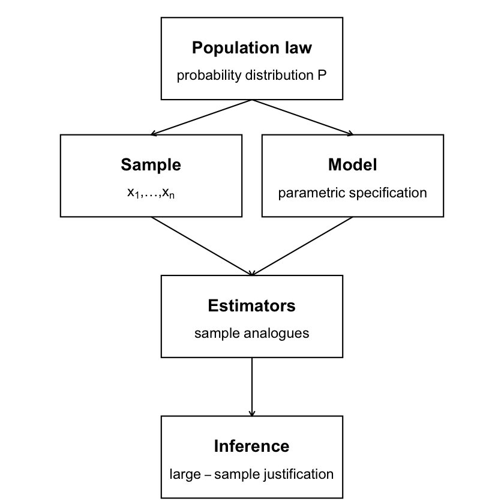

Xiamen University, Chow Institute
March, 2026

In the population, an ARMA(\(p,q\)) process satisfies
\[
\phi(L)x_t = \theta(L) w_t,
\qquad
w_t \sim wn(0,\sigma_w^2),
\] with unknown parameters
\[
\phi_1,\ldots,\phi_p,\quad
\theta_1,\ldots,\theta_q,\quad
\sigma_w^2.
\]
We observe only a finite sample \[ (x_1,\ldots,x_n), \] and the shocks \(\{w_t\}\) are unobserved.
Estimation consists of constructing \[ (\hat\phi_1,\ldots,\hat\phi_p,\; \hat\theta_1,\ldots,\hat\theta_q,\; \hat\sigma_w^2) \] using the observed data.
These concepts are introduced only as needed to justify inference.
Consider an AR(\(p\)) model \[ x_t = \phi_1 x_{t-1} + \cdots + \phi_p x_{t-p} + w_t. \]
This model has a regression representation:
We can estimate \((\phi_1,\ldots,\phi_p)\) by ordinary least squares
\[ (\hat\phi_1,\ldots,\hat\phi_p) = \arg\min_{\phi_1,\ldots,\phi_p} \sum_{t=p+1}^n \left( x_t - \phi_1 x_{t-1} - \cdots - \phi_p x_{t-p} \right)^2. \]
\[ x_t = \phi x_{t-1} + w_t. \]
The OLS estimator of \(\phi\) is \[ \hat\phi = \arg\min_{\phi} \sum_{t=2}^n (x_t - \phi x_{t-1})^2. \]
Solving the minimization problem yields \[ \hat\phi = \frac{\sum_{t=2}^n x_{t-1} x_t} {\sum_{t=2}^n x_{t-1}^2}. \]
Properties of a good estimator?
Recall \[ \hat\phi = \phi + \frac{\sum_{t=2}^n x_{t-1} w_t} {\sum_{t=2}^n x_{t-1}^2}. \]
Question: \[ \mathbb{E}(\hat\phi) \stackrel{?}{=} \phi. \]
For \(\hat\phi\) to be unbiased, we would need strict exogeneity:
\[ \mathbb{E}[w_t \mid x_1, x_2, \ldots, x_n] = 0, \] which cannot hold in dynamic models.
Since finite-sample unbiasedness fails, we focus on consistency: \[ \hat\phi \xrightarrow{p} \phi \quad \text{as } n \to \infty. \]
Using the decomposition \[ \hat\phi - \phi = \frac{\sum_{t=2}^n x_{t-1} w_t} {\sum_{t=2}^n x_{t-1}^2}, \] consistency depends on the behavior of the numerator and denominator as sample size grows.
We need \[ \frac{1}{n}\sum_{t=2}^n x_{t-1}^2 \;\xrightarrow{p}\; \mathbb{E}(x_{t-1}^2) > 0. \]
We need \[ \frac{1}{n}\sum_{t=2}^n x_{t-1} w_t \;\xrightarrow{p}\; \mathbb{E}(x_{t-1} w_t) = 0. \]
The consistency argument involves population quantities such as \[ \mathbb{E}(x_{t-1}^2), \qquad \mathbb{E}(x_{t-1} w_t). \]
These expectations are only meaningful if the process \(\{x_t\}\) admits time-invariant moments.
This requires stationarity of \(\{x_t\}\). In an AR model, where
\[ w_t := x_t - \phi x_{t-1}, \] stationarity of \(\{x_t\}\) implies joint stationarity of \((x_t, w_t)\), so these population moments are well defined.
In time series analysis, we observe a single realization \((x_1,\ldots,x_n)\) of a stochastic process.
Sample averages such as \[ \frac{1}{n}\sum_{t=2}^n x_{t-1}^2, \qquad \frac{1}{n}\sum_{t=2}^n x_{t-1} w_t \] are time averages, computed along one observed path.
The corresponding population quantities, \[ \mathbb{E}(x_{t-1}^2), \qquad \mathbb{E}(x_{t-1} w_t), \] are ensemble averages: expectations taken across hypothetical repetitions of the process at a fixed time.
For estimation to work, time averages must coincide with ensemble averages. This is exactly what ergodicity guarantees.
Ergodicity is not automatic. Whether it holds depends on the way dependence propagates over time.
For the linear time series models studied in this course:
In linear ARMA models, causality implies absolute summability, which in turn ensures ergodicity.
Let \(\{x_t\}\) be a stationary and ergodic process, and let \(g(\cdot)\) be a function such that \(\mathbb{E}|g(x_t)| < \infty\).
Then, \[ \frac{1}{n}\sum_{t=1}^n g(x_t) \;\xrightarrow{p}\; \mathbb{E}[g(x_t)]. \]
This result justifies replacing population moments by sample averages in estimation.
Recall \[ \hat\phi = \frac{\frac{1}{n}\sum x_{t-1}x_t} {\frac{1}{n}\sum x_{t-1}^2}. \]
Under stationarity and ergodicity, \[ \frac{1}{n}\sum x_{t-1}^2 \to \mathbb{E}(x_{t-1}^2), \qquad \frac{1}{n}\sum x_{t-1}w_t \to \mathbb{E}(x_{t-1}w_t). \]
Combining, \(\hat\phi \xrightarrow{p} \phi\): the OLS estimator is consistent.
\[ \hat\phi = \frac{\sum_{t=2}^n x_{t-1}x_t}{\sum_{t=2}^n x_{t-1}^2} = \phi + \frac{\sum_{t=2}^n x_{t-1}w_t}{\sum_{t=2}^n x_{t-1}^2}. \]
To get a sampling distribution, scale the error: \[ \sqrt{n}(\hat\phi-\phi) = \frac{\frac{1}{\sqrt{n}}\sum_{t=2}^n x_{t-1}w_t} {\frac{1}{n}\sum_{t=2}^n x_{t-1}^2}. \]
We already used ergodicity to show \[ \frac{1}{n}\sum_{t=2}^n x_{t-1}^2 \;\to\; \mathbb{E}(x_{t-1}^2). \]
Now consider the numerator: \[ \frac{1}{\sqrt{n}}\sum_{t=2}^n x_{t-1} w_t. \]
In an AR model, \[ \mathbb{E}(w_t \mid x_{t-1}, x_{t-2}, \ldots) = 0, \] so the sequence \(\{x_{t-1} w_t\}\) is a martingale difference sequence.
A CLT for the partial sum \[ \frac{1}{\sqrt{n}}\sum_{t=2}^n x_{t-1} w_t \] requires two ingredients:
In the AR model, the martingale difference structure of \(\{x_{t-1} w_t\}\) ensures weak dependence, which delivers (1). Together with finite second moments, this is sufficient to rule out domination by extreme terms and deliver (2). Under these conditions, \[ \frac{1}{\sqrt{n}}\sum_{t=2}^n x_{t-1} w_t \;\xrightarrow{d}\; N\!\left(0,\; \mathbb{E}(x_{t-1}^2 w_t^2)\right). \]
For an AR(\(p\)) model with white-noise innovations, \[ x_t = \phi_1 x_{t-1} + \cdots + \phi_p x_{t-p} + w_t, \qquad w_t \sim wn(0,\sigma_w^2), \] the model admits a regression representation.
These conditions replace independence in time-series settings.
So far, we have seen that OLS works for AR models because they admit a regression representation with observed regressors.
For example, an MA(1) model: \[ x_t = w_t + \theta w_{t-1}, \] depends on latent innovations \(\{w_t\}\).
In MA and ARMA models, the shocks \(\{w_t\}\) are unobserved. Estimation therefore relies on the likelihood of the observed data \((x_1,\ldots,x_n)\).
The likelihood is the joint density \[ f(x_1,\ldots,x_n), \] which can always be written as a product of conditional densities: \[ f(x_1)\, f(x_2\mid x_1)\, \cdots\, f(x_n\mid x_1,\ldots,x_{n-1}). \]
Assume the innovations are Gaussian and Independent: \[ w_t \stackrel{i.i.d.}{\sim} N(0,\sigma^2). \]
This assumption yields a tractable likelihood.
The parameters \((\phi_1,\ldots,\phi_p,\;\theta_1,\ldots,\theta_q,\;\sigma_w^2)\) index the joint density above.
MLE selects parameter values that maximize the (log-)likelihood evaluated at the observed data.
\[ x_t = w_t + \theta w_{t-1}, \qquad w_t \stackrel{i.i.d.}{\sim} N(0,\sigma^2), \quad t=1,\ldots,n. \] Writing \(\sigma^2\) for the innovation variance (previously \(\sigma_w^2\)),
For any candidate \((\theta,\sigma^2)\) and any initial value \(w_0\), the model implies the recursion \[ w_t = x_t - \theta w_{t-1}, \qquad t=1,\ldots,n, \] so each \(w_t\) is a function of \((x_1,\ldots,x_t)\) and \(w_0\).
Under \(w_t \stackrel{i.i.d.}{\sim} N(0,\sigma^2)\), \[ \begin{aligned} f(x_1,\ldots,x_n \mid w_0;\theta,\sigma^2) =& \prod_{t=1}^n f(x_t \mid x_{t-1},\ldots,x_1,w_0;\theta,\sigma^2)\\ =& \prod_{t=1}^n \frac{1}{\sqrt{2\pi\sigma^2}} \exp\!\left(-\frac{w_t^2}{2\sigma^2}\right), \end{aligned} \] where each \(w_t\) is obtained from the recursion.
The expression above is the conditional likelihood: it treats the initial innovation \(w_0\) as fixed.
The exact likelihood integrates over the model-implied distribution of \(w_0\): \[ f(x_1,\ldots,x_n;\theta,\sigma^2) = \int f(x_1,\ldots,x_n \mid w_0;\theta,\sigma^2)\, f(w_0)\,dw_0. \]
Both approaches are valid; under stationarity, they are asymptotically equivalent.
In practice, the conditional likelihood is often used for computational simplicity.
\[ x_t = \phi x_{t-1} + w_t + \theta w_{t-1}, \qquad w_t \stackrel{i.i.d.}{\sim} N(0,\sigma^2). \]
Given \((\phi,\theta,\sigma^2)\) and initial values \((x_0, w_0)\), we have \[ w_t = x_t - \phi x_{t-1} - \theta w_{t-1}, \qquad t=1,\ldots,n. \]
Under \(w_t \stackrel{i.i.d.}{\sim} N(0,\sigma^2)\), the conditional likelihood is \[ f(x_1,\ldots,x_n \mid x_0, w_0;\phi,\theta,\sigma^2) = \prod_{t=1}^n \frac{1}{\sqrt{2\pi\sigma^2}} \exp\!\left( -\frac{w_t^2}{2\sigma^2} \right). \]
Once the likelihood is specified, inference is based on the large-sample behavior of the MLE.
In addition to stationarity and ergodicity of the process, and under standard likelihood regularity conditions:
The Gaussian likelihood can be used even if the true innovations are not Gaussian.